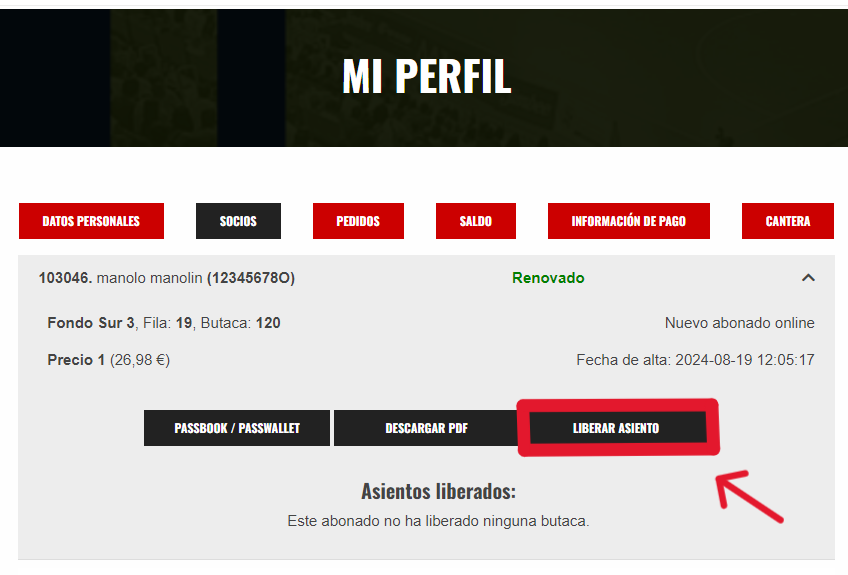

Cuando el club permita la liberación de asientos y el abonado quiera liberarlo debe seguir los siguientes pasos:
1º Acceder a su perfil de abonado y marcar la opción de Liberar Asiento.

2º Seleccionar el evento en el que desea liberar el asiento y pulsar en el botón de liberar asiento de nuevo.
3º Pulsar en el botón que se muestra a continuación y después pulsar en el botón que dice SI.
Y con esto finaliza el proceso de liberar el asiento.